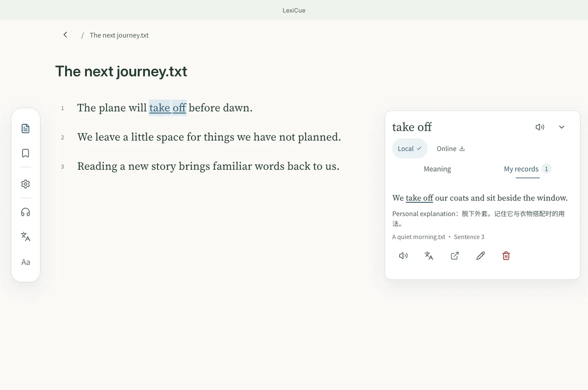
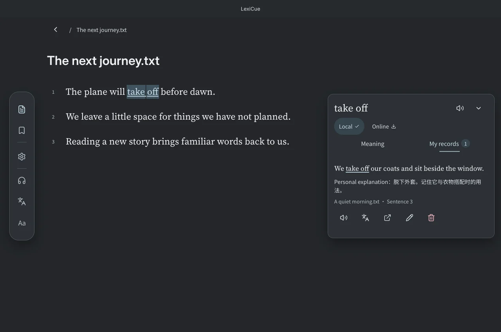

Recall on re-encounter
Let a new encounter bring back the sentences you saved before.
On this page
Recognize a saved expression
Saved expressions are highlighted in later reading when matched. Open the highlight and switch to previous records to see earlier sentences, translations, meanings and notes. These are past contexts, not the meaning of the new sentence.



Choose how to continue
Compare the earlier use with today’s sentence, revise your note or return to the old source. Current reading has no due-card queue or rating step. Earlier scheduled-review records remain in History.